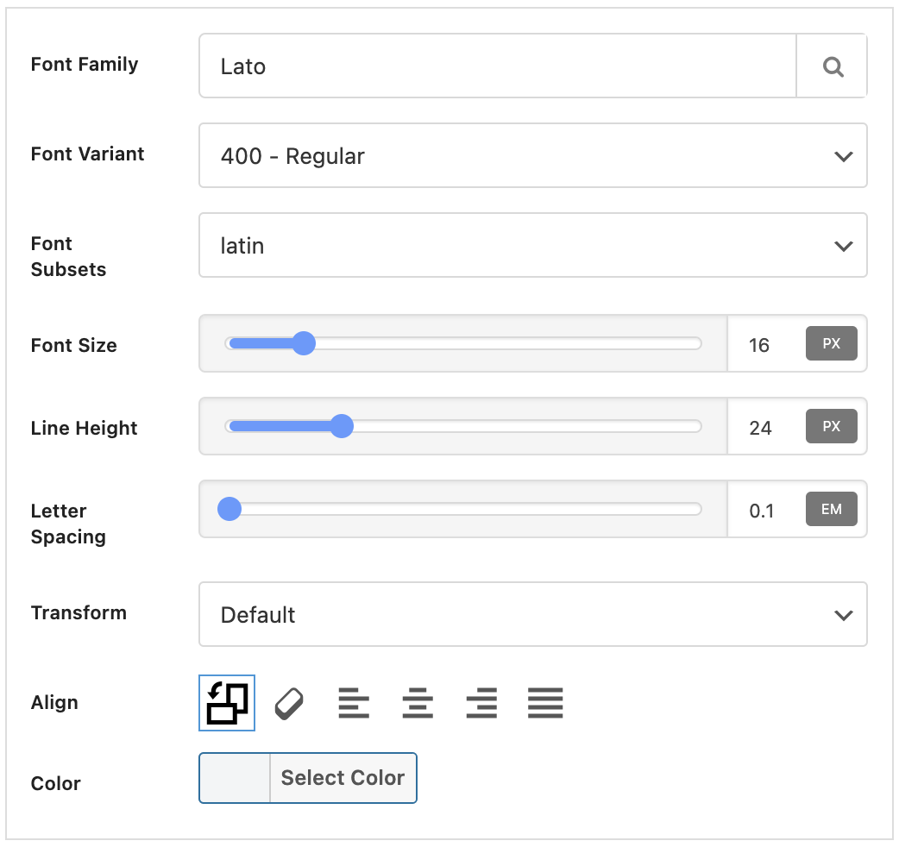

The theme offers built-in fonts and color customization controls. Typography elements can be customized separately.
Colors
There are plenty of color options included in the theme to meet your brand needs. The theme offers two color scheme Light & Dark Mode.
All site-wide colors. Highlight, accents, buttons, badges, and flags.
- Go to the Newsy → Theme Options → Colors panel
- Use available color pickers to adjust color values
Typography
The theme offers built-in fonts customization controls. Typography elements can be customized as like.
- Go to the Newsy → Theme Options → Typography panel
- Use available font controls to adjust typography values
Font Control

This view represents font settings for a theme place. You can change:
- Font – font family
- Variant – font style, available choices depend on the chosen font
- Subset – font subset
- Size – text size
- Line height – the height of a line
- Letter Spacing – increases or decreases the space between characters in a text
- Text Transform – controls the capitalization of text
- Align – controls the text position
- Color - text color
General Typography
In this section you will be able to set global fonts for site body, headings etc.
-
Site Base Typography (Body)
Base typography for body that will affect all elements that haven't specified typography style. -
General Heading Typography
Base typography for heading tags. -
H1 Font Size
Typography for heading 1. -
H2 Font Size
Typography for heading 2. -
H3 Font Size
Typography for heading 3. -
H4 Font Size
Typography for heading 4. -
H5 Font Size
Typography for heading 5. -
H6 Font Size
Typography for heading 6.
Main Menu Typography
In this section you will be able to set fonts for main menu.
- Main Menu Typography
- Main Menu Text Color
- Main Menu Hover Text Color
- Main Menu Hover Background Color
- Main Menu Active Text Color
- Main Menu Active Background Color
- Main Menu Icon Color
- Main Menu Hover Bottom Line Color
- Sub Menu Typography
Top Menu Typography
- Top Menu Typography
- Top Menu Hover Text Color
Mobile Menu Typography
- Mobile Menu Typography
- Mobile Menu Hover Text Color
Footer Menu Typography
- Footer Menu Typography
- Footer Menu Hover Text Color
- Footer Menu Hover Background Color
- Footer Menu Active Text Color
- Footer Menu Active Background Color
Archive Typography
- Archive Name Typography
Post Typography
-
Post Title
Typography of post title in single posts. -
Post Summary
Typography for posts summary in single posts. -
Posts & Pages Content
Typography for content of posts and static pages.
Block Typography
-
Block Title
Typography for content of block header titles. -
Block Tabs
Typography for content of block header tabs.
Module Typography
-
Module: Post Title
Typography of post title in block posts. -
Module: Post Title Hover Color
-
Module: Post Summary
Typography of posts summary in block posts.
-
Module: Post Meta
Typography of posts meta in block posts.
-
Module: Post Meta (Author Name)
Typography of posts author name in post meta.
Custom Fonts
As soon as you add a custom font, it will add to font family list. The way to adding through Font Manager. In theme panel go to Newsy → Custom Fonts.
As you see in above image there are several tabs in Font Manager and we are going to describe them one by one.
Custom Fonts
This is exactly the same as Add New Custom Font in Typography described above.
- Click "Add More" button.
- Here Select a name for new font.
- Now upload and select font files in each field according to their format. Different browsers support different formats.
- Save Changes.
Font Stacks
Web safe fonts are fonts that are pre-installed by many operating systems. While not all systems have the same fonts installed, you can use a web safe font stack to choose several fonts that look similar, and are installed on the various systems that you want to support.
You can simply add new font stack as following steps.
- At the bottom of the page click on Add New Font Stack.
- New Font Stack will be added. Write main font name in Font Name, and write similar fonts name in Font Stack.
- If the name of a font family is more than one word, it must be in quotation marks, like: “Times New Roman”.
- It’s done and you can select new Font Stack as font-family in Typography.